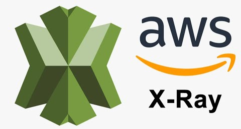

Introduction
AWS X-Ray is a distributed tracing service that enables developers to analyze and visualize the flow of requests as they travel through various components of a microservices-based application. With support for a wide range of AWS services and compatibility with popular programming languages, X-Ray allows you to identify performance bottlenecks, troubleshoot errors, and optimize the overall health of your applications.
Understanding AWS X-Ray
AWS X-Ray is a distributed tracing service that enables developers to analyze and visualize the flow of requests as they travel through various components of a microservices-based application. With support for a wide range of AWS services and compatibility with popular programming languages, X-Ray allows you to identify performance bottlenecks, troubleshoot errors, and optimize the overall health of your applications.
Key Features of AWS X-Ray:
- Distributed Tracing: X-Ray traces requests as they traverse through different services, providing a comprehensive view of the entire application architecture.
- Service Maps: Visualize the relationships and dependencies between various components, gaining insights into how each service contributes to the overall performance
- Segmentation and Annotations: Break down traces into segments, representing units of work, and add custom annotations to provide additional context for better analysis
- Performance Metrics: Obtain detailed performance metrics for each component, allowing you to pinpoint areas that require optimization.
- Integration with AWS Services:Seamlessly integrates with other AWS services, including Lambda, EC2, API Gateway, and more, enabling you to trace requests across your entire cloud environment.
Benefits of Using AWS X-Ray:
- Improved Debugging: Quickly identify and troubleshoot errors by tracing requests and pinpointing the root cause of issues.
- Performance Optimization: Analyze performance metrics to identify bottlenecks and areas for optimization, ultimately enhancing the overall efficiency of your applications.
- Enhanced Visibility: Gain a holistic view of your application's architecture, allowing you to understand how different services interact and contribute to the overall user experience.
- Cost-Efficient Operation: By optimizing performance and identifying areas for improvement, you can operate your applications more efficiently, potentially reducing operational costs.
Getting Started with AWS X-Ray:
- Instrument Your Code: Integrate the X-Ray SDK into your application code, adding trace points to capture information about requests.
- Enable X-Ray on AWS Services: Enable X-Ray tracing on AWS services like Lambda,EC2, and ECS, adding trace points to capture information about requests.
- Visualize and Analyze: Use the AWS X-Ray console to visualize traces, analyze service maps, and gain actionable insights into your application's performance.
Conclusion
AWS X-Ray is a game-changer for developers and operations teams seeking to gain a deeper understanding of their distributed applications. By providing detailed insights into the flow of requests, performance metrics, and dependencies between services, X-Ray empowers you to build and maintain high-performance, reliable applications. As you embark on your cloud journey, consider incorporating AWS X-Ray into your toolkit for a more robust and streamlined approach to monitoring and debugging.